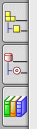

在基本环境应用模块模块下，资源条提供了几个标准的导航器：
装配导航器
重用库
导航器中显示诸如部件中的特征，以及装配中的组件等信息，可以使用导航器来管理与编辑数据，查看与更改创建顺序，选择对象，比如特征、工具或操作。

根据您使用的应用模块，可能会有一些特定于该应用模块的导航器可用。
|
注释 |
部件导航器在 NX 所有应用模块中都是可用的。但其中的特征编辑功能只有当处于建模应用模块下才可用。 |